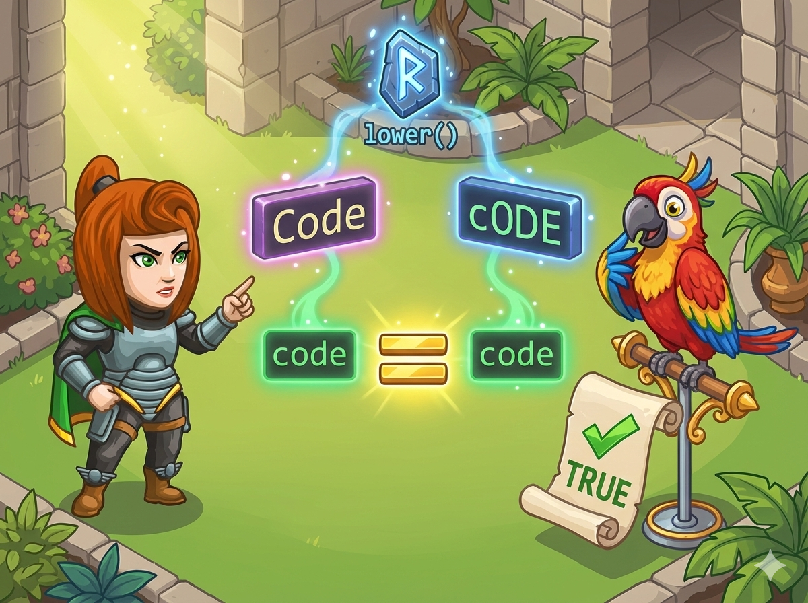

英雄养了一只聪明的鹦鹉，它能模仿人类说话。
英雄发现，鹦鹉在听话时 不分大小写。比如 "Hello" 和 "hello" 在它听起来是一样的。
👉 任务： 输入两个字符串，在 忽略大小写 的情况下比较它们。
如果 第1个 < 第2个，输出 <
如果 第1个 > 第2个，输出 >
如果 相等，输出 =
例如：Hello 和 hello 是相等的。
计算机中 'A' 和 'a' 的 ASCII 码是不同的，直接比肯定不行。
变小写： tolower(char) 函数可以把字符变成小写。
比较函数： strcmp(a, b)
- 返回 0：相等
- 返回负数：a < b
- 返回正数：a > b
Python 的字符串自带 .lower() 方法，可以直接生成一个小写版本的新字符串。
比较时直接用 ==, <, > 即可。
使用 cin.getline 读入，防止遇到空格停止。
#include <bits/stdc++.h> using namespace std; const int N = 100; // 数组大小，稍微开大一点 char a[N], b[N]; int main() { // 1. 读入两行字符串 (可能含空格) cin.getline(a, N); cin.getline(b, N); // 2. 全部转换为小写 // a[i] 为真表示没遇到结束符 '\0' for (int i = 0; a[i]; i++) { a[i] = tolower(a[i]); } for (int i = 0; b[i]; i++) { b[i] = tolower(b[i]); } // 3. 比较 int c = strcmp(a, b); // 4. 输出结果 if (c == 0) { cout << "="; } else if (c < 0) { cout << "<"; } else { cout << ">"; } return 0; }
代码极其简洁，核心就是 lower()。
# 1. 读入并直接转为小写 s1 = input().lower() s2 = input().lower() # 2. 直接比较并输出 if s1 == s2: print("=") elif s1 < s2: print("<") else: print(">")